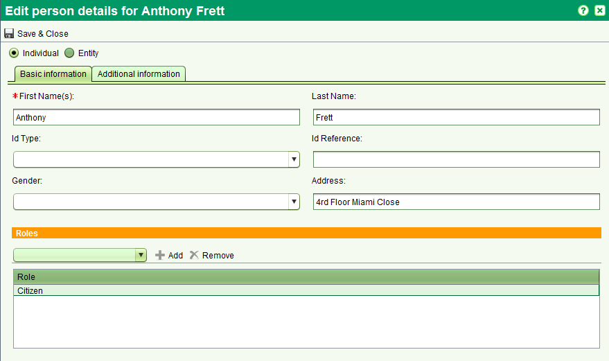

L'écran de détails d'une partie permet de créer de nouvelles parties ainsi que d'éditer les détails d'une partie existante.
Cet écran peut être accèdé depuis multiples fonctions de SOLA incluant l'écran de recherche d'une partie.

Il est possible d'entrer les détails d'une entité (ex: organisation, groupe ou entreprise) ou d'un individu.
Les informations de base requises incluent le nom de la partie avec des informations supplémentaires
comme les contacts et pseudonymes entrés comme requis dans l'onglet informations supplémentaires.
Une fois que les détails de la partie sont entrés, cliquer sur Sauvegarder (Sauvegarder & Fermer) pour créer ou mettre à jour la partie.
Voir aussi